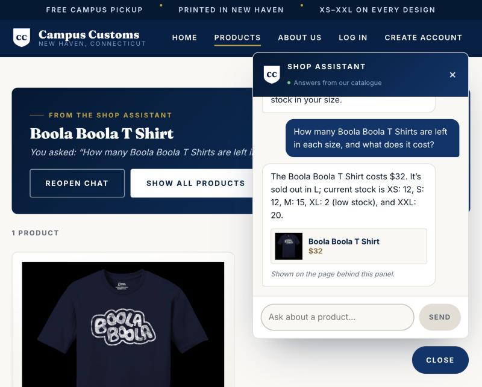
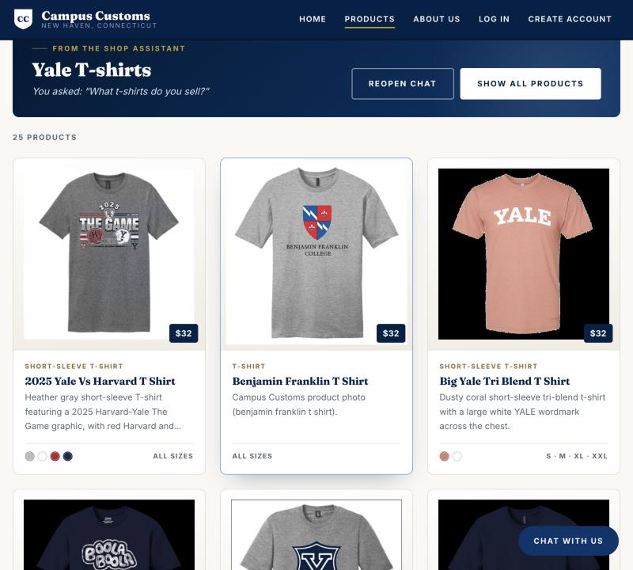
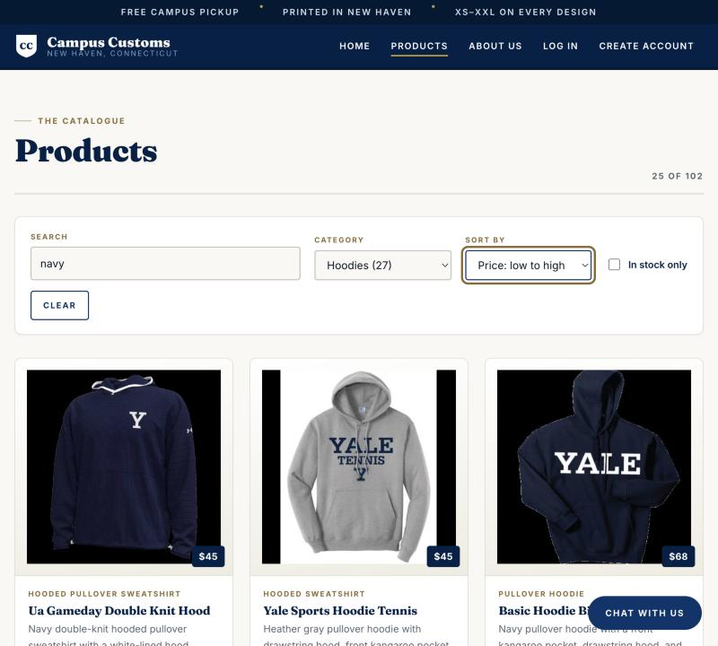

Check 1 — The chat reads real stock and price from the database
Asked in the chat panel: How many Boola Boola T Shirts are left in each size, and
what does it cost?

The assistant answers with an exact price and a per-size count — $32, sold out in L, and XS: 12, S: 12, M: 15, XL: 2 (low stock), XXL: 20. It leads with the sold-out size rather than burying it, and the product card underneath is built by the backend from the database rather than from anything the model typed.
catalogue and
inventory tables exactly:
| Size | XS | S | M | L | XL | XXL | Price |
|---|---|---|---|---|---|---|---|
| Database | 12 | 12 | 15 | 0 | 2 | 20 | $32 |
| Assistant | 12 | 12 | 15 | sold out | 2 | 20 | $32 |
Check 2 — A category question rebuilds the page as a results grid
Asked in the chat panel: What t-shirts do you sell?

The site navigated itself to the Products page and replaced the full catalogue with a captioned results grid — heading “Yale T-shirts”, the original question shown underneath, and 25 products. Each card carries the photograph, garment type, name, price, a short description, colour swatches, and which sizes are in stock, and clicking any of them opens that product's own detail page.
browse_category tool, which returns the whole
category rather than the eight best matches a search would return.
Check 3 — Usability improvement from Problem 9: search, filter and sort
On the Products page: typed navy, chose the Hoodies category, and
sorted by Price: low to high.

The toolbar narrowed 102 products to 25 of 102 and sorted them cheapest first ($45, $45, $68), with a Clear button appearing once a filter is active. Before this change the page was a single unsorted grid of 102 items with no way to search it.
garment_type column holds
22 labels for about six kinds of garment, so a dropdown built straight from it would
have been unusable. One shared mapping folds them into six real categories, and the same
mapping is used by the filter here and by the assistant's browse_category
tool, so the page and the chat always agree.